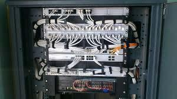
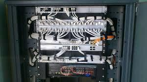

Alugar computador modelo de negócio em crescimento
Tem se tornado muito popular o modelo de negócios conhecido como hardware as a service, ou HAAS.
Essa transação comercial oferece ao cliente a possibilidade de contratar somente aquilo que ele
realmente precisa. É uma contratação sob demanda, sem que haja necessidade de investir muito mais
dinheiro do que o necessário. Uma das áreas com mais movimentação nesse sentido é a tecnológica,
especialmente no que diz respeito à prestação de serviços, que incluem soluções como alugar
computador, notebook e servidor.
Isto significa que um empresário que tem necessidade de modernizar ou estabelecer a infraestrutura
tecnológica de sua empresa não precisa investir alto no desenvolvimento da rede. Basta alugar
computador, notebook e servidor com uma empresa especializada em identificar as necessidades por
meio de um diagnóstico e ofertar as configurações essenciais para o pleno desempenho de suas
atividades. Havendo necessidade de ampliar a quantidade de desktops, basta acionar o fornecedor para
a inclusão de mais equipamentos à rede.
Perfis de empresas para alugar computador
Empresas de pequeno e médio porte têm o perfil ideal de cliente para alugar computador, pois o
empresário deste tipo de organização pode se dedicar ao core do seu negócio, deixando a parte de
infraestrutura aos cuidados dos especialistas.
Essa parceria funciona muito bem, entretanto, é fundamental contar com um fornecedor experiente,
cujo foco seja a plena satisfação do cliente, como a Computer Soluções em TI EIRELI.
Com quase uma década neste mercado, a empresa é a fornecedora preferida na Grande São Paulo. Além de
alugar computador, notebook e servidor para os clientes, a empresa presta todo o suporte necessário
para o contratante. Algumas das soluções incluídas no contrato de locação de equipamentos:
- Disponibilização de equipamentos modernos e com sistema operacional atualizado;
- Suporte técnico para esclarecimento de dúvidas;
- Manutenção preventiva, visando a produtividade do cliente;
- Backup na nuvem;
- Monitoramento da performance dos equipamentos.
Alugar computador e outros equipamentos
A Computer Soluções em TI EIRELI é a parceria ideal para empresas que desejam fazer a locação de
equipamentos de informática e contar com os melhores serviços de suporte técnico. A empresa atende
clientes de todos os segmentos, estabelecidos na região metropolitana de São Paulo. O melhor
custo-benefício em serviços sob demanda.


 
